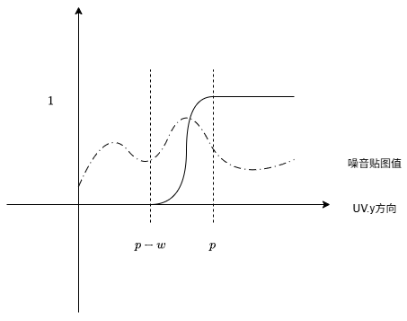
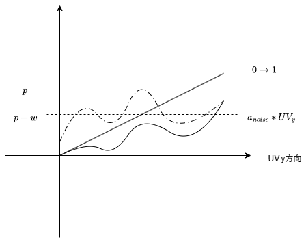
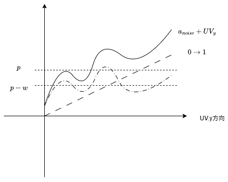

01UV坐标操控
基础溶解
这里主要记录扩展的溶解效果，基础溶解效果可以见08-基础溶解
基础溶解效果有点类似于整体消失，即根据噪音贴图的数值，全局的从某个地方随机开始消失。这里我想做一个带有一定方向性的消失，例如逐步从上往下消失，如果直接用UV来截取，可以做出一个水平线扫过的消失效果。但这里想有一定的随机蔓延效果。
方向溶解
思路一
我这里的想法是用smoothstep结合UV给出一段过渡范围，然后用这个范围去截取噪音贴图，代码如下：
uniform sampler2D noise;
uniform float progress;
uniform float dissolve_width = 0.5;
void fragment() {
float noise_alpha = texture(noise,UV).r;
float y_progress = smoothstep(progress-dissolve_width,progress,UV.y);
COLOR.a = step(noise_alpha,y_progress);
}这个过程大概类似于下图

先按照UV.y方向用给定数值计算一段过渡曲线。然后用这个曲线值去截取噪音贴图的值。如果噪音在值下面的为1，上面则显示0。这样在溶解前进过程中会有一个方向感。中间的宽度值dissolve_width决定了中间随机消融的区间宽度。
不过这样直接用step溶解会给出一个硬边效果。这里想添加一下过渡效果。
这里我最直接的方式是用计算出的y_progress值在0到noise_alpha之间做过渡即最后step改成：
void fragment() {
// 之前一致
Color.a = smoothstep(0，noise_alpha, y_progress);
}- 如果
y_progress < 0,那么区域保持透明 - 如果
y_progress > noise_alpha,那么区域保持可见 - 中间区域则从$0 \to 1$过渡。
根据溶解区间内noise_alpha不一样会有一个渐变的效果。
思路二
把整个噪音贴图采样值在目标方向上做一个限制。具体来说，回顾直接的方向裁剪，其通过一个值来裁剪UV.y。所以把噪音值叠加在方向上可以产生一个梯度，其过程大概如下：
void fragment() {
float noise_alpha = texture(noise,UV).r;
float dir_project_alpha = noise_alpha * UV.y;
}这个过程可以有下图描述，$a_{noise}$表示噪音采样值，$UV_y$表示UV的y坐标。相乘之后相当于整体把曲线压倒斜线之下。这样整个noise曲线就有了一个方向性。

但是由图也可以看到如果噪音值为0，那么即使UV.y为1，其也会得出0，进而导致方向溶解的时候溶解不对的地方。所以于其上来讲，更希望将noise曲线叠加到UV的y坐标上，而不是相乘。
简单来说$a_{noise}+UV_y$更合适。曲线如下图：

这里会发现，其整个值域会变成$0 \to 2$范围。这里可以通过线性插值来混合两个数值保证值域范围，如下：
void fragment() {
float noise_alpha = texture(noise,UV).r;
float dir_project_alpha = noise_alpha*0.2 + UV.y * 0.8;
COLOR.a = smoothstep(progress-dissolve_width,progress,dir_project_alpha);
}其实这里可以发现，我们所需要的曲线其实就是接近于一个线性上，叠加略微抖动的曲线。